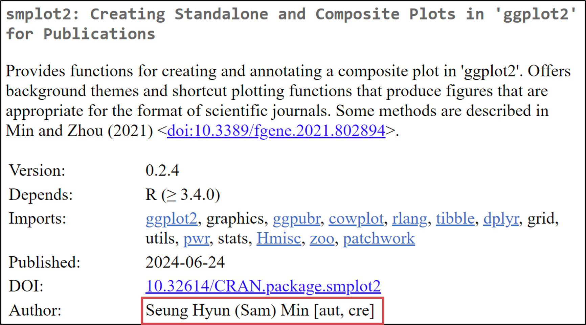
Creating Publication-Ready Plots with smplot2
Introduction
Welcome to this tutorial on smplot2, an R package designed to create elegant figures. If you’re new to R or data visualization, this guide will walk you through the basics step by step.
Why I made smplot2
ggplot2is the most widely used data visualization library in the worldHowever, producing publication-quality figures requires many lines of codes.
So, in 2021, I decided to create shortcut functions for scientific publications and put them into a package.
- In the middle of 2022, I realized I had to restructure the whole package
smplotfor flexibility, so it becamesmplot2.
Installation of smplot2
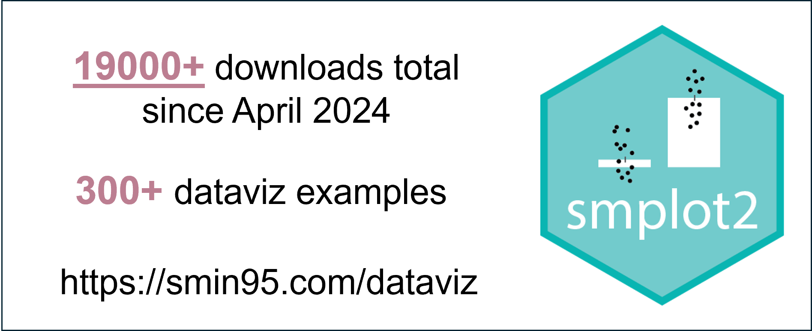
install.packages('smplot2')Citable Sources of smplot2
Introductory tutorials have been published as two separate research articles in the past 5 years:
- Seung Hyun Min. Visualization of composite plots in R using a programmatic approach and smplot2 (2024). Advances in Methods and Practices in Psychological Science, 7(3).
- Seung Hyun Min, Jiawei Zhou. smplot: An R Package for Easy and Elegant Data Visualization (2021). Frontiers in Genetics, 12:802894
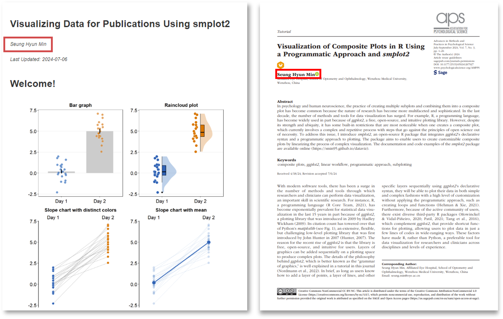
If you are interested in more about the package, you can read these two papers or visit documentation website of the package: www.smin95.com/dataviz
Loading Packages
library(tidyverse)
library(smplot2)Note: We’re loading two packages here:
tidyverse: A collection of R packages for data science (includes ggplot2 for plotting)smplot2: The package we’re learning about today - it enhances ggplot2 with custom themes and plot types
Basics of ggplot2
Before diving into smplot2, let’s understand the foundation it builds upon: ggplot2.
The ggplot2 philosophy:
Every graph starts with
ggplot()You build graphs by adding layers with
+Think of it like painting: start with a canvas (
ggplot()), then add elements one by one
ggplot(data = mpg, mapping = aes(x = displ, y = hwy, color = class)) +
geom_point()
Breaking down the code:
ggplot(data = mpg):Start with the
mpgdataset (comes withggplot2)Contains fuel economy data for cars
mapping = aes(x = displ, y = hwy, color = class):aes()stands for “aesthetics” - how data maps to visual propertiesx = displ: Put engine displacement on the x-axisy = hwy: Put highway miles per gallon on the y-axiscolor = class: Color points by car class (SUV, compact, etc.)Think: “I want displacement to control horizontal position, mpg to control vertical position, and car type to control color”
+ geom_point():+adds a layer to our plotgeom_point()means “draw points” (for scatter plots)Other options:
geom_line()for lines,geom_bar()for bars, etc.
Basic Plotting with smplot2 Themes
Default ggplot2 Plot
ggplot(data = mpg, mapping = aes(x = displ, y = hwy, color = class)) +
geom_point()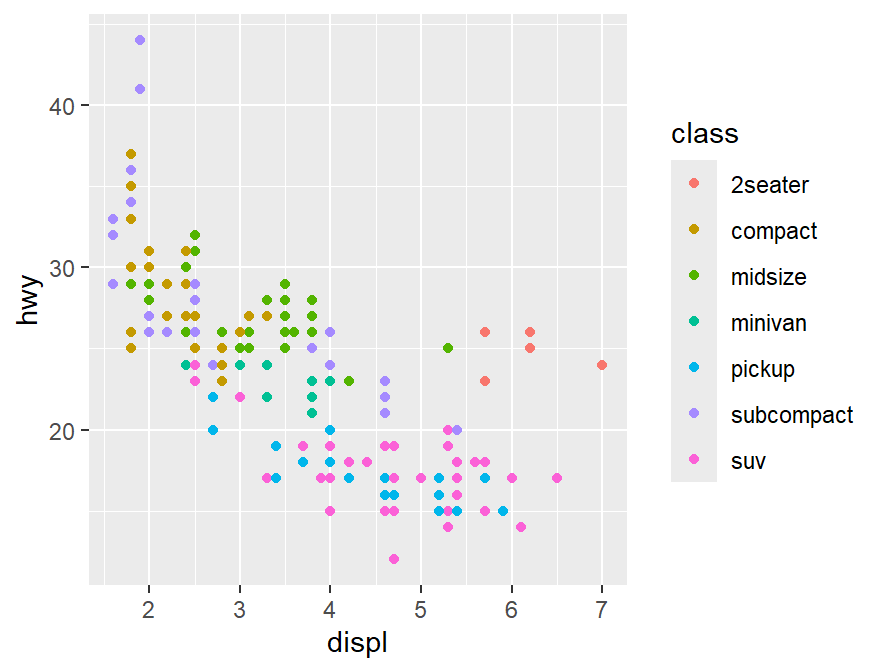
Note: This is a standard ggplot2 plot. Notice the grey background and gridlines - some people find these distracting.
Adding smplot2 Grid Theme
ggplot(data = mpg, mapping = aes(x = displ, y = hwy, color = class)) +
geom_point() +
sm_hgrid()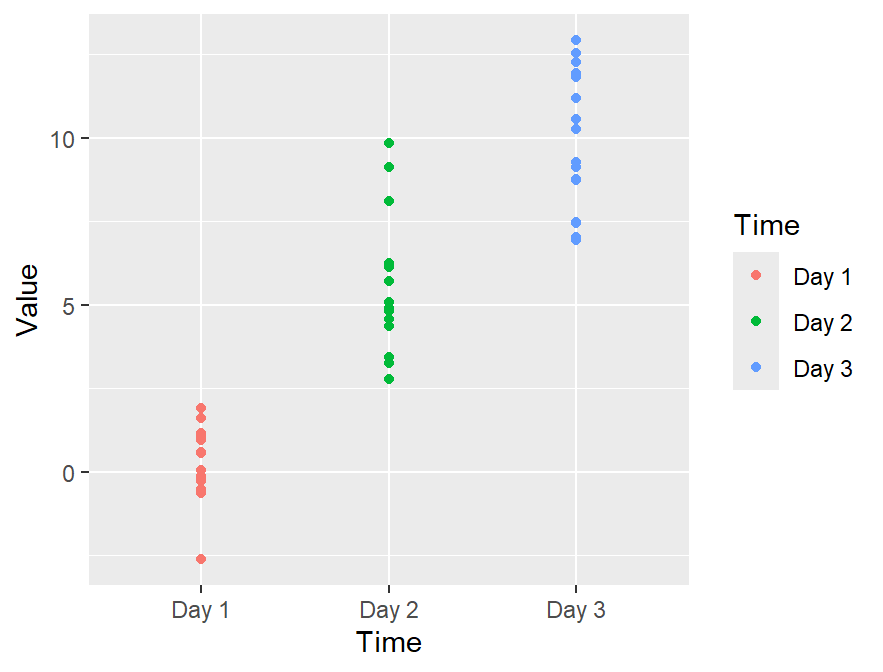
Note: sm_hgrid() adds only horizontal gridlines, which can make it easier to read values on the y-axis.
With Legend Placement
ggplot(data = mpg, mapping = aes(x = displ, y = hwy, color = class)) +
geom_point() +
sm_hgrid(legends = TRUE)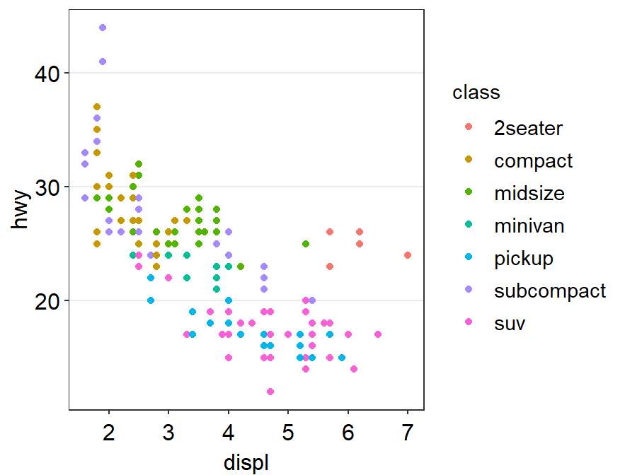
Note: The legends = TRUE argument places the legend inside the plot area, saving space.
Enhancing Scatterplots
Default ggplot2 Scatterplot (for comparison)
ggplot(data = mpg, mapping = aes(x = displ, y = hwy, color = class)) +
geom_point()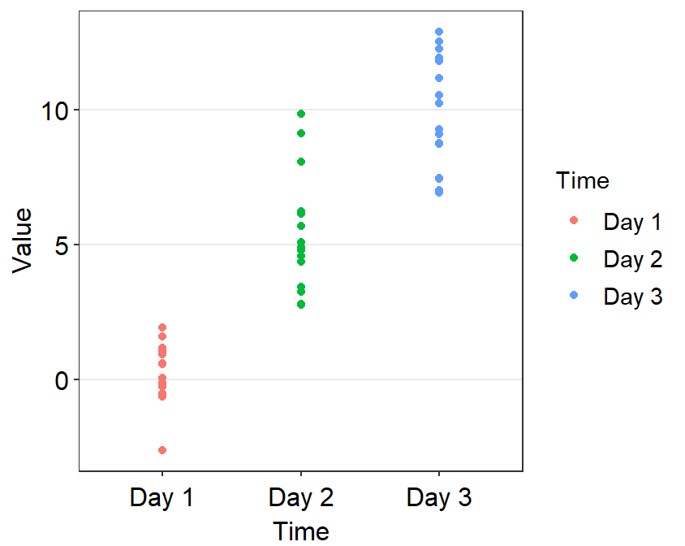
Note: This default plot has small fonts, a grey background, and many gridlines. Let’s improve it!
Cleaner Version with smplot2
ggplot(data = mpg, mapping = aes(x = displ, y = hwy, color = class)) +
geom_point() +
sm_hvgrid(borders = FALSE)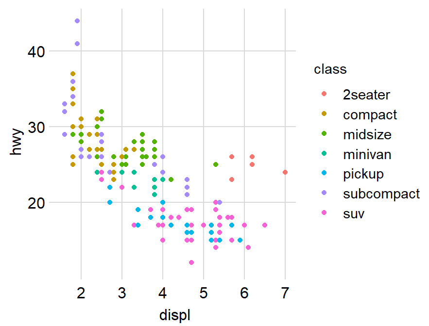
Note: sm_hvgrid(borders = FALSE) gives us:
White background
Clean gridlines
No border around the plot
Better font sizing
Adding Correlation Statistics
Basic Scatterplot
ggplot(data = mtcars, mapping = aes(x = drat, y = mpg)) +
geom_point(shape = 21, fill = "#0f993d", color = "white", size = 3) 
Note: Here we’re customizing points with:
shape = 21: Filled circlesfill: Fill color (green)color: Border color (white)size: Point size
Adding Correlation Line and Statistics
ggplot(data = mtcars, mapping = aes(x = drat, y = mpg)) +
geom_point(shape = 21, fill = "#0f993d", color = "white", size = 3) +
sm_statCorr()`geom_smooth()` using formula = 'y ~ x'
Note: sm_statCorr() automatically:
Adds a correlation line (linear regression)
Calculates and displays R² / R and p-value
Uses Pearson correlation by default (Spearman also available)
Customizing Correlation Display
ggplot(data = mtcars, mapping = aes(x = drat, y = mpg)) +
geom_point(shape = 21, fill = "#0f993d", color = "white", size = 3) +
sm_statCorr(color = "#0f993d", corr_method = "spearman",
linetype = "dashed", R2 = TRUE)`geom_smooth()` using formula = 'y ~ x'
Note: We can customize:
corr_method: “pearson” (default) or “spearman”color: Line colorlinetype: “solid”, “dashed”, etc.R2: Whether to show R² value. IfFALSE, it shows R instead.
Alternative Customization Method
ggplot(data = mtcars, mapping = aes(x = drat, y = mpg)) +
geom_point(shape = 21, fill = "#0f993d", color = "white", size = 3) +
sm_statCorr(
corr_method = "spearman",
fit.params = list(
color = "#0f993d",
linetype = "dashed"
)
)`geom_smooth()` using formula = 'y ~ x'
Note: The fit.params argument lets you pass a list of graphical parameters to customize the fit line.
Faceted Plots with Correlation
Basic Faceted Plot
ggplot(data = mtcars, mapping = aes(x = drat, y = mpg)) +
geom_point(shape = 21, fill = "#0f993d", color = "white", size = 3) +
facet_wrap(~ cyl)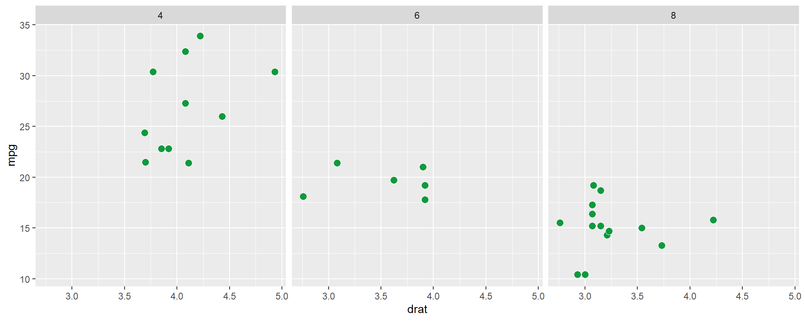
Note: facet_wrap(~ cyl) creates separate plots for each cylinder count (4, 6, and 8 cylinders).
Adding Correlation to Each Facet
ggplot(data = mtcars, mapping = aes(x = drat, y = mpg)) +
geom_point(shape = 21, fill = "#0f993d", color = "white", size = 3) +
facet_wrap(~ cyl) +
sm_statCorr()`geom_smooth()` using formula = 'y ~ x'
Note: sm_statCorr() automatically calculates separate correlations for each facet!
Customizing Correlation Aesthetics to the Facets
ggplot(data = mtcars, mapping = aes(x = drat, y = mpg)) +
geom_point(shape = 21, fill = "#0f993d", color = "white", size = 3) +
facet_wrap(~ cyl) +
sm_statCorr(fit.params = list(
color = "#0f993d",
linetype = "dashed"
))`geom_smooth()` using formula = 'y ~ x'
Bar Plots with smplot2
Creating Sample Data
set.seed(2025) # This ensures we get the same random data every time
df <- data.frame(
Subject = rep(paste0('S', 1:16), times = 3),
Value = c(
rnorm(n = 16, mean = 0, sd = 1.5), # Day 1
rnorm(n = 16, mean = 5, sd = 1.7), # Day 2
rnorm(n = 16, mean = 10, sd = 2.0) # Day 3
),
Time = rep(paste("Day", 1:3), each = 16)
)
head(df) Subject Value Time
1 S1 0.93113510 Day 1
2 S2 0.05346211 Day 1
3 S3 1.15973173 Day 1
4 S4 1.90873363 Day 1
5 S5 0.55646315 Day 1
6 S6 -0.24428151 Day 1Note: Here we’re creating a sample dataset with:
16 subjects (S1 through S16)
Measurements taken at 3 time points (Day 1, Day 2, Day 3)
Random values with increasing means from Day 1 to Day 3
Traditional Bar Plot with ggplot2
ggplot(df, aes(x = Time, y = Value, color = Time)) +
stat_summary(
fun = mean,
geom = "bar",
aes(fill = Time),
alpha = 0.7,
width = 0.7,
color = NA
) +
geom_point(
position = position_jitter(width = 0.12),
alpha = 1,
size = 2
) +
theme(legend.position = "none")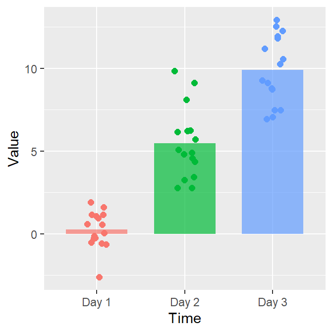
Note: This requires several steps with ggplot2:
Calculate means for bars
Add individual data points
Adjust transparency and positions
Remove legend
Simplified Version with sm_bar()
ggplot(data = df, mapping = aes(x = Time, y = Value, color = Time)) +
sm_bar() +
scale_color_manual(values = sm_palette(3)) +
ggtitle("A bar graph")
Note: sm_bar() does all the work in one function:
Calculates means for bars
Adds individual points
Uses nice default aesthetics
Using smplot2 Color Palettes
# Three hexcodes in string format
sm_palette(3)[1] "#cc1489" "#0f993d" "#1262b3"Note: sm_palette() generates color palettes. sm_palette(3) gives 3 colors from the default palette.

ggplot(data = df, mapping = aes(x = Time, y = Value, color = Time)) +
sm_bar() +
scale_color_manual(values = sm_color('wine','skyblue','lightbrown')) +
ggtitle("A bar graph")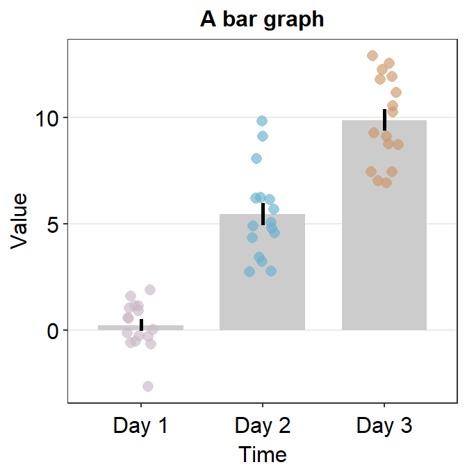
Note: sm_color() lets you pick specific named colors from smplot2’s palette.
Customizing Bar Plot Appearance
ggplot(data = df, mapping = aes(x = Time, y = Value, fill = Time)) +
sm_bar(
bar.params = list(width = 0.5, alpha = 0.5),
point.params = list(
shape = 21, color = "white",
stroke = 0.75, alpha = 1
)
) +
scale_y_continuous(limits = c(-5, 15), expand = c(0, 0.05)) +
scale_fill_manual(values = sm_color('wine','skyblue','lightbrown'))
Note: We can customize:
Bar properties with
bar.paramsPoint properties with
point.paramsAxis limits with
scale_y_continuous()Colors with
scale_fill_manual()
Slope Chart
Slope charts show changes between two time points for each subject.
Creating Slope Chart Data
set.seed(201) # generate random data
before <- abs(rnorm(20, 2.5, 1))
after <- abs(rnorm(20, 5, 1))
Subject <- rep(paste0("S", seq(1:20)), 2)
Data <- data.frame(Value = matrix(c(before, after), ncol = 1))
beforeAfter <- rep(c("Before", "After"), each = length(before))
df <- cbind(Subject, Data, beforeAfter)Note: We’re creating “Before” and “After” measurements for 20 subjects.
Setting Factor Levels
df$beforeAfter <- factor(df$beforeAfter, levels = c("Before", "After"))
df$beforeAfter [1] Before Before Before Before Before Before Before Before Before Before
[11] Before Before Before Before Before Before Before Before Before Before
[21] After After After After After After After After After After
[31] After After After After After After After After After After
Levels: Before AfterNote: Factors control the order of categories on axes. We want "Before" on the left, "After" on the right.
Basic Slope Chart
ggplot(data = df, aes(x = beforeAfter, y = Value, fill = beforeAfter)) +
sm_slope(group = Subject) +
scale_fill_manual(values = sm_color("blue", "orange"))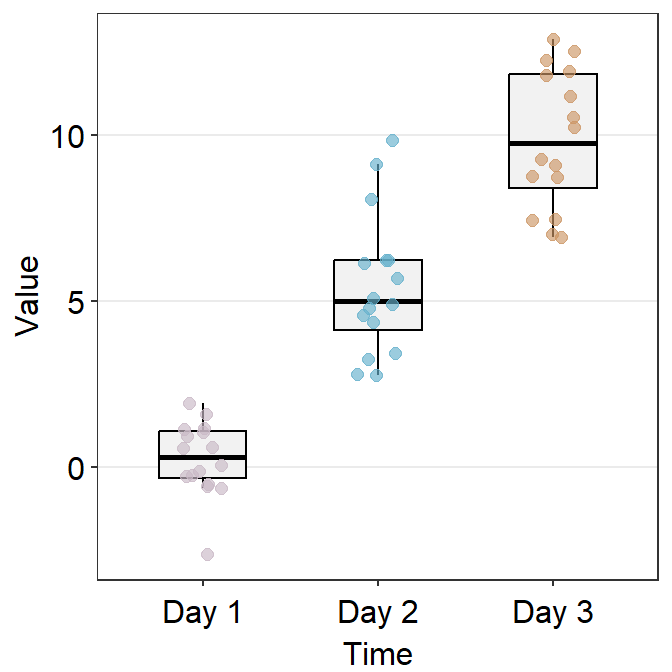
Note: sm_slope():
Connects each subject’s before/after values with a line
group = Subjecttells it which variable identifies subjectsShows individual trajectories
Adding Labels
ggplot(data = df, aes(x = beforeAfter, y = Value, fill = beforeAfter)) +
sm_slope(group = Subject, labels = c("Before", "After")) +
scale_fill_manual(values = sm_color("blue", "orange"))
Note: The labels argument customizes what appears on the x-axis.
Showing Group Means
ggplot(data = df, aes(x = beforeAfter, y = Value, fill = beforeAfter)) +
sm_slope(
labels = c("Before", "After"), group = Subject,
show_mean = TRUE
) +
scale_fill_manual(values = sm_color("blue", "orange"))
Note: show_mean = TRUE adds:
Thicker line connecting group means
Larger points for group means
Advanced Customization
ggplot(data = df, aes(x = beforeAfter, y = Value)) +
sm_slope(
labels = c("Before", "After"), group = Subject,
point.params = list(
alpha = 0.4, size = 2.5, color = "white",
shape = 21, fill = sm_color("skyblue")
),
line.params = list(
color = sm_color("skyblue"),
alpha = 0.3
),
avgPoint.params = list(
color = "transparent", shape = 21,
size = 4, fill = sm_color("blue")
),
avgLine.params = list(color = sm_color("blue"), size = 1),
show_mean = TRUE
)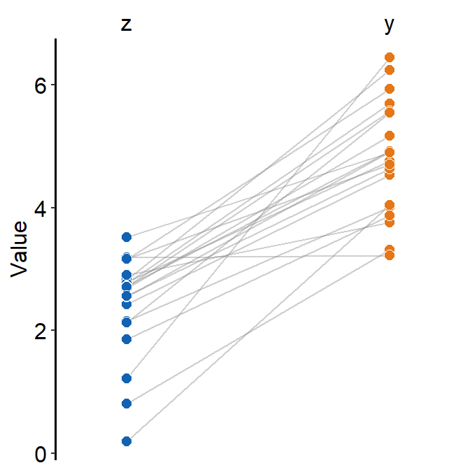
Note: smplot2 offers granular control through:
point.params: Individual pointsline.params: Individual linesavgPoint.params: Mean pointsavgLine.params: Mean lines
Simplified Mean Slope Chart
ggplot(data = df, aes(x = beforeAfter, y = Value)) +
sm_slope_mean(
labels = c("Before", "After"),
group = Subject, back_alpha = .3,
main_color = sm_color("purple"),
main_shape = 17,
show_err = TRUE,
errorbar_type = "sd"
)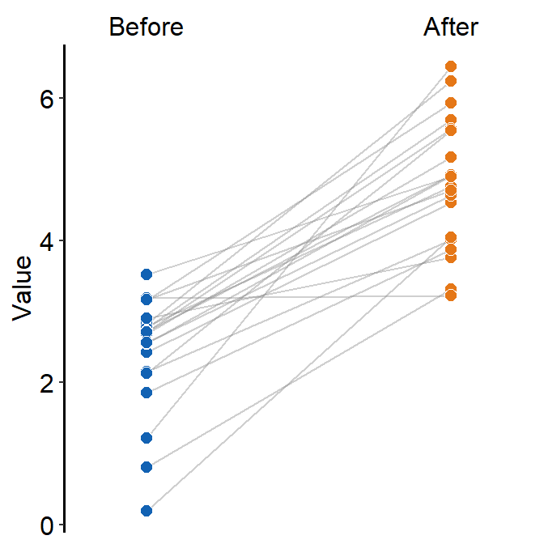
Note: sm_slope_mean() focuses on group means with options for:
show_err: Show error barserrorbar_type: “sd” (standard deviation) or “se” (standard error)back_alpha: Transparency of individual lines
Raincloud Plots
Raincloud plots combine violin plots, boxplots, and individual points.
Creating Raincloud Data
set.seed(211) # generate random data
group1 <- abs(rnorm(20, 2.5, 1))
group2 <- abs(rnorm(20, 5, 1))
Subject <- rep(paste0("S", seq(1:20)), 2)
Data <- data.frame(Value = matrix(c(group1, group2), ncol = 1))
Group <- rep(c("Group 1", "Group 2"), each = length(group1))
df <- cbind(Subject, Data, Group)Basic Raincloud Plot
ggplot(data = df, mapping = aes(x = Group, y = Value, fill = Group)) +
sm_raincloud() +
scale_fill_manual(values = sm_color("blue", "orange"))
Note: Raincloud plots show:
Density plot (the “cloud”) - shows distribution shape
Boxplot - shows median and quartiles
Points - individual data points
Different Color Scheme
ggplot(data = df, mapping = aes(x = Group, y = Value, fill = Group)) +
sm_raincloud() +
scale_fill_manual(values = sm_color("darkred", "viridian"))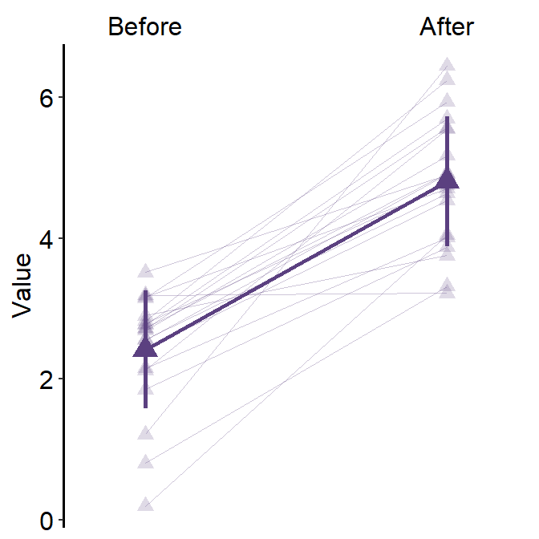
Adjusting Separation
ggplot(data = df, mapping = aes(x = Group, y = Value, fill = Group)) +
sm_raincloud(
boxplot.params = list(outlier.shape = NA),
sep_level = 0
) +
scale_fill_manual(values = sm_color("darkred", "viridian")) +
theme(axis.title.x = element_blank())
Note: sep_level controls spacing between elements:
0: Minimal separationHigher numbers: More separation
More Separation
ggplot(data = df, mapping = aes(x = Group, y = Value, fill = Group)) +
sm_raincloud(
boxplot.params = list(outlier.shape = NA),
sep_level = 4
) +
scale_fill_manual(values = sm_color("darkred", "viridian")) +
theme(axis.title.x = element_blank())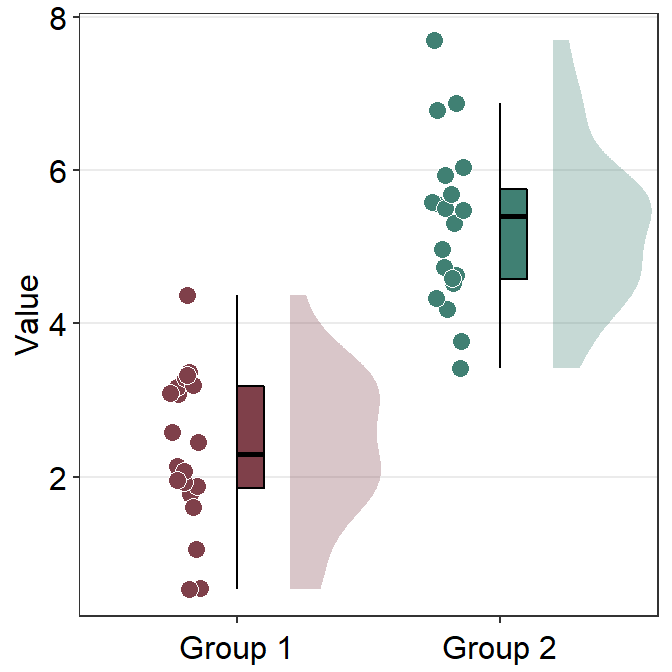
Left-Sided Raincloud
ggplot(data = df, mapping = aes(x = Group, y = Value, fill = Group)) +
sm_raincloud(
boxplot.params = list(outlier.shape = NA),
sep_level = 2,
which_side = "l"
) +
scale_fill_manual(values = sm_color("darkred", "viridian")) +
theme(axis.title.x = element_blank())
Note: which_side controls where points appear:
“l”: Left side
“r”: Right side (default)
Forest Plot
Forest plots are useful for comparing multiple groups or conditions, especially in meta-analysis.
set.seed(2) # generate random data
day1 <- rnorm(20, 0, 1)
day2 <- rnorm(20, 5, 1)
day3 <- rnorm(20, 6, 1.5)
day4 <- rnorm(20, 7, 2)
Subject <- rep(paste0("S", seq(1:20)), 4)
Data <- data.frame(Value = matrix(c(day1, day2, day3, day4), ncol = 1))
Day <- rep(c("Day 1", "Day 2", "Day 3", "Day 4"), each = length(day1))
df2 <- cbind(Subject, Data, Day)Note: For sm_forest():
xshould be continuous (e.g.,Value)yshould be categorical/factor (e.g.,Day)
Basic Forest Plot
ggplot(data = df2, aes(x = Value, y = Day, color = Day)) +
sm_forest()
Note: Forest plots show:
Individual points for each observation
Density distributions for each group
Great for comparing distributions across groups
Custom Colors
ggplot(data = df2, aes(x = Value, y = Day, color = Day)) +
sm_forest() +
scale_color_manual(values = sm_palette(4))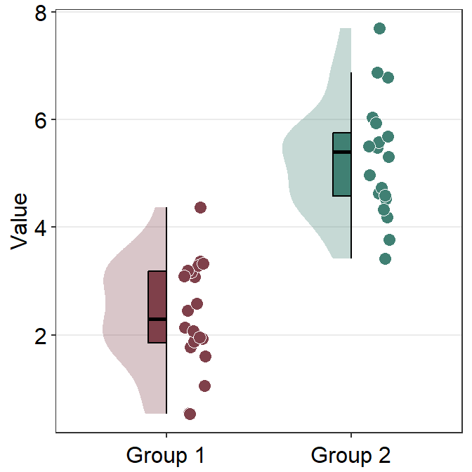
Adjusting Point Jitter and Separation
ggplot(data = df2, aes(x = Value, y = Day, color = Day)) +
sm_forest(point_jitter_width = 0.12, sep_level = 3) +
scale_color_manual(values = sm_palette(4))
Note:
point_jitter_width: Controls horizontal spread of pointssep_level: Controls vertical separation between groups
Summary
In this tutorial, we’ve covered:
Basic Themes:
sm_hgrid(),sm_hvgrid()for clean plot stylingCorrelation Plots:
sm_statCorr()for adding statistics to scatterplotsBar Plots:
sm_bar()for simplified bar graphs with individual pointsSlope Charts:
sm_slope()andsm_slope_mean()for before-after comparisonsRaincloud Plots:
sm_raincloud()for combined distribution visualizationForest Plots:
sm_forest()for comparing multiple groups
Key advantages of smplot2:
Simplified syntax for complex plots
Beautiful default aesthetics
Consistent styling across plot types
Easy customization
Integration with ggplot2 ecosystem
For more examples, check the documentation at: smin95.github.io/dataviz (Chapters 3-6)